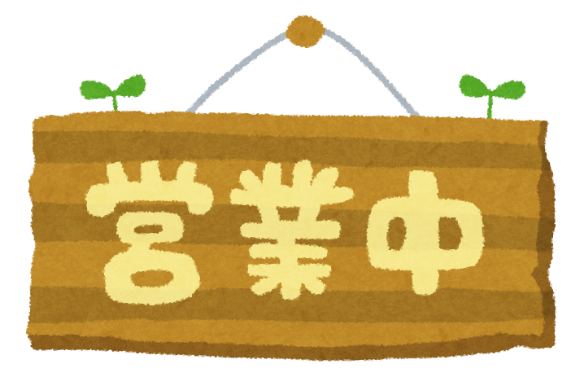

昨日の歩数がお金になる
歩いた歩数の分だけ、次の日にコインがもらえるよ！
たくさん歩いてコインを稼がないと、
ごはんが買えなくなっちゃうかも...！

生活リズムに気をつけよう
寝るときにアルコを寝かせてあげて、
起きるときにアルコを起こしてあげよう！
あなた自身の生活リズムがとても大事！
1週間、育ててあげよう
アルコを1週間育てきった頃には、
きっとあなたの生活リズムも改善している！
育てていくと、姿が変わるかも...？
Tips一覧
・活動時間が11時間を超えると眠れる
・睡眠時間が6時間を超えると起きられる
・18時間以上活動すると疲労がたまる
・満腹度が低いと病気になることがある
・歩数はタイトル画面で反映されるよ
・疲労はステータスから確認できない
・疲労がたまると病気になりやすいよ
・疲労は6時間を超える睡眠で軽減できる
・3日間育成を続けると姿が...？
・20分ごとにお腹が減るよ
・薬を飲んでも病気がぶり返すかも
・昨日までの歩数はグラフで見られる
・0時を回ると今日の歩数をチャージできる
・急に大きくお腹が減るときがあるよ
・目覚めるときは割とお腹が減るよ
・死んでもコインは引き継げるよ
・死んだらアイテムは消えちゃう
・アイテムは必要なとき買うのがオススメ